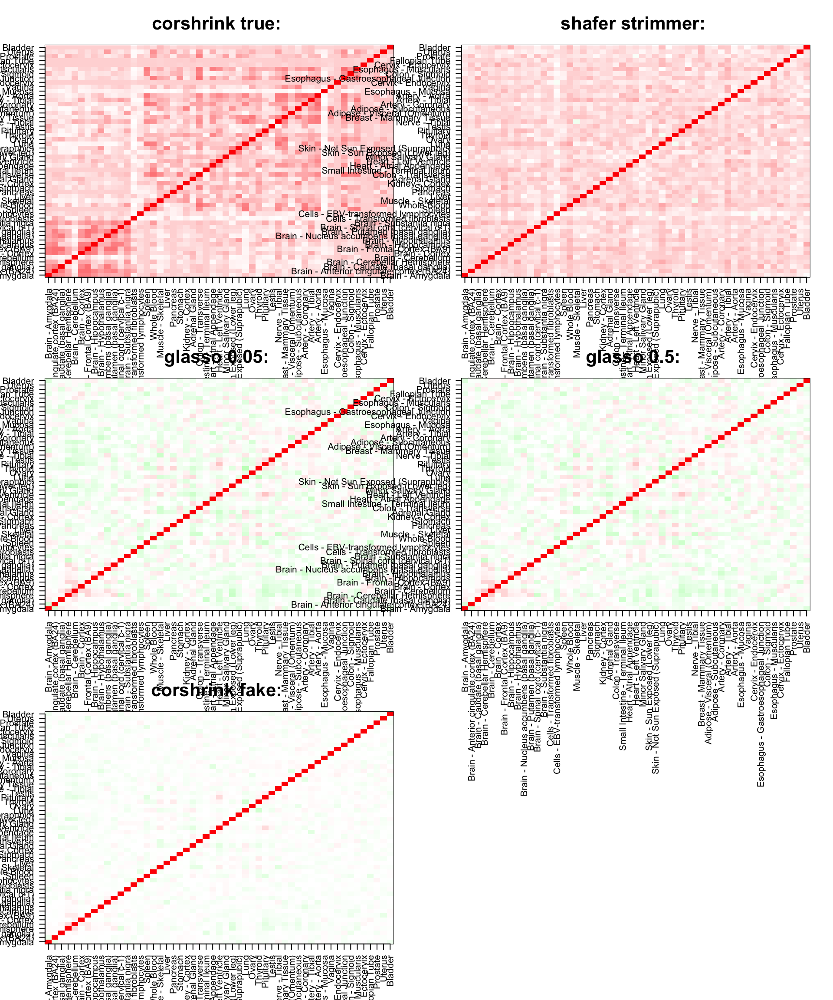

Last updated: 2017-05-19
Code version: 369a047
Corhrink is an ideal choice for shrinking tissue-tissue correlation matrix in GTEx data, because these correlations are computed over varying number of samples for different tissues. corpcor is designed to take a data matrix as input, whereas the input for glasso is a covariance matrix. So, how do we use corpcor in this case to compare with corshrink?
So, if one computes a person by tissues by genes matrix, there will be many NAs corresponding to cells where a person did not contribute a tissue for all genes. In order to empower corpcor, I decided to simulate the NA values per person per gene from the non-NA values in the tissues the person contributed.
The idea behind doing this is that if a person has given very few tissues, we are going to assign a bunch of random samples in the NA places which will bring down the the correlation between tissues that this person contributes to. As number of persons with NA for a tissue grows, there is a likely chance that the correlation will shrink more and more towards zero.
First we look at how the person by tissue table looks like.
person_label=read.table("../data/GTEX_V6/person_identifier_labels_with_numbers.txt");
samples_id <- read.table(file = "../data/GTEX_V6/samples_id.txt")[,1]
samples_person <- sapply(samples_id, function(x) return(paste0(strsplit(as.character(x), "-")[[1]][1:2], collapse ="-")))
tissue_labels <- read.table(file = "../data/GTEX_V6/samples_id.txt")[,3]
table <- xtabs(~ samples_person + tissue_labels)
unique_persons <- unique(samples_person)
unique_tissues <- unique(tissue_labels)The highest number of tissues contributed by a person is
max(rowSums(table))[1] 34unique_persons[which.max(rowSums(table))][1] "GTEX-1399U"The tissue with most number of contributions is
max(colSums(table))[1] 430which.max(colSums(table))Muscle - Skeletal
38 Next we build a person by tissue by gene matrix.
library(data.table)
data <- data.frame(fread("../data/GTEX_V6/cis_gene_expression.txt"))
matdata <- t(data[,-c(1,2)])
mat <- matrix(0, length(unique_persons), length(unique_tissues))
person_tissue_genes <- array(0, c(length(unique_persons), length(unique_tissues), dim(matdata)[2]))
for(u in 1:length(unique_persons)){
index_samp <- which(samples_person == samples_person[u])
tissue_lab_samp <- tissue_labels[index_samp]
person_tissue_genes[u, match(tissue_lab_samp, unique_tissues), ] = matdata[index_samp, ]
cat("We are at person : ", u, "\n")
}
save(person_tissue_genes, file = "../output/person_tissue_genes.rda")We load the matrix
person_tissue_genes <- get(load("../output/person_tissue_genes.rda"))Next we choose a gene for which we want to compare the tissue correlation structure.
numg <- 100We fill in the NAs by resampling and then take the ranks of the observations for robust inference (getting rid of the library size issues)
mat <- person_tissue_genes[,,numg]
rank_mat <- matrix(0, dim(mat)[1], dim(mat)[2])
for(u in 1:dim(mat)[1]){
temp <- mat[u, ]
w <- which(temp == 0);
mat[u, w] = sample(temp[temp != 0], length(w), replace=TRUE)
rank_mat[u,] <- rank(mat[u,])
}Now we fit the different correlation shrinkage algorithms (Shafer-Strimmer, GLASSO at different scales and even CorShrink on this new data).
cov_mat <- cov(rank_mat);
system.time(strimmer_sample <- corpcor::cov.shrink(mat))Estimating optimal shrinkage intensity lambda.var (variance vector): 0.0849
Estimating optimal shrinkage intensity lambda (correlation matrix): 0.1765 user system elapsed
0.020 0.005 0.025 system.time(glasso_sample_005 <- glasso::glasso(cov_mat, rho = 0.05)) user system elapsed
0.134 0.001 0.136 system.time(glasso_sample_05 <- glasso::glasso(cov_mat, rho = 0.5)) user system elapsed
0.045 0.001 0.047 system.time(glasso_sample_1 <- glasso::glasso(cov_mat, rho = 1)) user system elapsed
0.03 0.00 0.03 system.time(glasso_sample_10 <- glasso::glasso(cov_mat, rho = 10)) user system elapsed
0.006 0.000 0.006 system.time(cov_sample_ML <- CorShrink::CorShrinkML(cov2cor(cov_mat), nsamp_mat = 550, sd_boot = FALSE, ash.control = list(mixcompdist = "normal",
nullweight = 1)))ash cor only and ash cor PD matrices are different user system elapsed
0.239 0.081 0.324 Now we plot the image plots of these correlation matrices.
cor_result <- get(load("../output/ash_cor_only_gtex_tissues.rda"))
par(mfrow=c(3,2))
col=c(rev(rgb(seq(1,0,length=1000),1,seq(1,0,length=1000))),
rgb(1,seq(1,0,length=1000),seq(1,0,length=1000)))
image(as.matrix(cor_result[order_index,order_index, numg]),
col=col, main=paste0("corshrink true: "), cex.main=2,
xaxt = "n", yaxt = "n", zlim=c(-1,1))
axis(1, at = seq(0, 1, length.out = 53), labels = unique_tissues[order_index], las=2, cex.axis = 1)
axis(2, at = seq(0, 1, length.out = 53), labels = unique_tissues[order_index], las=2, cex.axis = 1)
col=c(rev(rgb(seq(1,0,length=1000),1,seq(1,0,length=1000))),
rgb(1,seq(1,0,length=1000),seq(1,0,length=1000)))
image(as.matrix(cov2cor(strimmer_sample))[order_index, order_index],
col=col, main=paste0("shafer strimmer: "), cex.main=2,
xaxt = "n", yaxt = "n", zlim=c(-1,1))
axis(1, at = seq(0, 1, length.out = 53), labels = unique_tissues[order_index], las=2, cex.axis = 1)
axis(2, at = seq(0, 1, length.out = 53), labels = unique_tissues[order_index], las=2, cex.axis = 1)
col=c(rev(rgb(seq(1,0,length=1000),1,seq(1,0,length=1000))),
rgb(1,seq(1,0,length=1000),seq(1,0,length=1000)))
image(as.matrix(cov2cor(glasso_sample_005$w))[order_index, order_index],
col=col, main=paste0("glasso 0.05: "), cex.main=2,
xaxt = "n", yaxt = "n", zlim=c(-1,1))
axis(1, at = seq(0, 1, length.out = 53), labels = unique_tissues[order_index], las=2, cex.axis = 1)
axis(2, at = seq(0, 1, length.out = 53), labels = unique_tissues[order_index], las=2, cex.axis = 1)
col=c(rev(rgb(seq(1,0,length=1000),1,seq(1,0,length=1000))),
rgb(1,seq(1,0,length=1000),seq(1,0,length=1000)))
image(as.matrix(cov2cor(glasso_sample_05$w))[order_index, order_index],
col=col, main=paste0("glasso 0.5: "), cex.main=2,
xaxt = "n", yaxt = "n", zlim=c(-1,1))
axis(1, at = seq(0, 1, length.out = 53), labels = unique_tissues[order_index], las=2, cex.axis = 1)
axis(2, at = seq(0, 1, length.out = 53), labels = unique_tissues[order_index], las=2, cex.axis = 1)
col=c(rev(rgb(seq(1,0,length=1000),1,seq(1,0,length=1000))),
rgb(1,seq(1,0,length=1000),seq(1,0,length=1000)))
image(as.matrix(cov_sample_ML$ash_cor_only)[order_index, order_index],
col=col, main=paste0("corshrink fake: "), cex.main=2,
xaxt = "n", yaxt = "n", zlim=c(-1,1))
axis(1, at = seq(0, 1, length.out = 53), labels = unique_tissues[order_index], las=2, cex.axis = 1)
axis(2, at = seq(0, 1, length.out = 53), labels = unique_tissues[order_index], las=2, cex.axis = 1)
sessionInfo()R version 3.3.3 (2017-03-06)
Platform: x86_64-apple-darwin13.4.0 (64-bit)
Running under: macOS Sierra 10.12
locale:
[1] en_US.UTF-8/en_US.UTF-8/en_US.UTF-8/C/en_US.UTF-8/en_US.UTF-8
attached base packages:
[1] stats graphics grDevices utils datasets methods base
other attached packages:
[1] fgsea_1.1.2 Rcpp_0.12.10 softImpute_1.4 Matrix_1.2-8
[5] knitr_1.15.1 CorShrink_0.99.0 workflowr_0.4.0 rmarkdown_1.5
loaded via a namespace (and not attached):
[1] Biobase_2.34.0 httr_1.2.1
[3] jsonlite_1.4 splines_3.3.3
[5] foreach_1.4.3 gsubfn_0.6-6
[7] Formula_1.2-1 expm_0.999-2
[9] highr_0.6 stats4_3.3.3
[11] latticeExtra_0.6-28 Rsamtools_1.26.1
[13] yaml_2.1.14 RSQLite_1.1-2
[15] backports_1.0.5 lattice_0.20-35
[17] chron_2.3-50 digest_0.6.12
[19] GenomicRanges_1.26.1 RColorBrewer_1.1-2
[21] XVector_0.14.0 checkmate_1.8.2
[23] colorspace_1.3-2 htmltools_0.3.6
[25] plyr_1.8.4 XML_3.98-1.6
[27] biomaRt_2.30.0 zlibbioc_1.20.0
[29] corpcor_1.6.9 scales_0.4.1
[31] glasso_1.8 BiocParallel_1.8.2
[33] git2r_0.18.0 htmlTable_1.9
[35] tibble_1.3.1 sqldf_0.4-10
[37] IRanges_2.8.1 ggplot2_2.2.1
[39] SummarizedExperiment_1.4.0 GenomicFeatures_1.26.0
[41] ashr_2.0.5 nnet_7.3-12
[43] BiocGenerics_0.20.0 lazyeval_0.2.0
[45] proto_1.0.0 survival_2.41-3
[47] magrittr_1.5 memoise_1.1.0
[49] evaluate_0.10 doParallel_1.0.10
[51] MASS_7.3-45 foreign_0.8-67
[53] truncnorm_1.0-7 rsconnect_0.7
[55] tools_3.3.3 data.table_1.10.4
[57] REBayes_0.73 stringr_1.2.0
[59] S4Vectors_0.12.0 munsell_0.4.3
[61] cluster_2.0.6 AnnotationDbi_1.36.0
[63] Biostrings_2.42.0 GenomeInfoDb_1.10.1
[65] rlang_0.1.1.9000 grid_3.3.3
[67] RCurl_1.95-4.8 iterators_1.0.8
[69] htmlwidgets_0.8 bitops_1.0-6
[71] base64enc_0.1-3 gtable_0.2.0
[73] codetools_0.2-15 curl_2.6
[75] DBI_0.6-1 mygene_1.10.0
[77] reshape2_1.4.2.9000 R6_2.2.1
[79] GenomicAlignments_1.10.1 gridExtra_2.2.1
[81] rtracklayer_1.34.1 fastmatch_1.1-0
[83] Hmisc_4.0-2 rprojroot_1.2
[85] stringi_1.1.5 pscl_1.4.9
[87] parallel_3.3.3 SQUAREM_2016.8-2
[89] rpart_4.1-10 acepack_1.4.1 This R Markdown site was created with workflowr